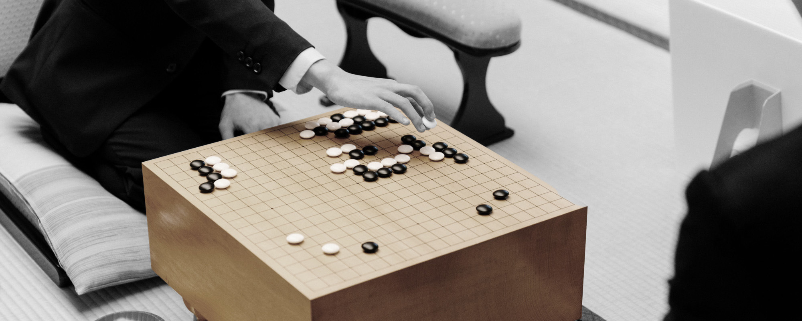

日本棋院（一般公益法人日本棋院／いっぱんこうえきほうじんにほんきいん Ippankōekihōjin Nihon kiin）是日本最大的圍棋管理組織，負責組織各種棋戰。總部位於東京都千代田區，並在名古屋和大阪設有中部總本部和關西總本部。日本棋院目前轄下棋士約300名。
日本棋院成立於1924年，由當時最大的兩個圍棋組織本因坊門和方圓社在大倉喜七郎的支持下合併而成。成立初期，日本棋院曾面臨棋正社、吳清源和圍棋新社等競爭。
1950年，關西部分棋士在橋本宇太郎的領導下脫離日本棋院，自創了關西棋院。
1924年成立，位於東京都千代田區，作為日本棋院的總部，負責組織主要的棋戰、棋士管理及其他相關業務。
1950年成立，位於名古屋市，負責中部地區的圍棋比賽組織、棋士管理以及地方圍棋推廣活動。
1924年成立，位於大阪市，負責關西地區的圍棋比賽組織、棋士管理及地方圍棋推廣活動。
日本棋院頭銜賽

日本棋院的頭銜賽是日本圍棋界最重要的職業比賽系列，代表著最高水平的圍棋競技賽事。這些比賽每年舉辦，參賽者爭奪各項頂級頭銜。
這些頭銜賽具有悠久歷史和高額獎金，吸引了眾多頂尖棋手參與。每個頭銜賽都有獨立的預選賽、挑戰賽，最終由挑戰者與衛冕者對戰決定冠軍，優勝者將獲得該年度的頭銜。
日本棋院的七大頭銜賽及獎金如下：
- 棋聖戰 ¥4,500萬
- 名人戰 ¥3,000萬
- 本因坊戰 ¥2,800萬
- 王座戰 ¥1,400萬
- 天元戰 ¥1,300萬
- 碁聖戰 ¥800萬
- 十段戰 ¥700萬